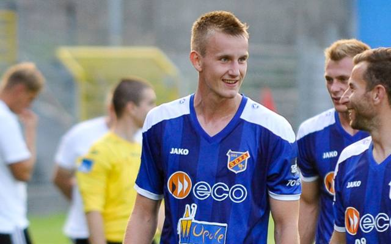

Gazeta ZSO nr II w Opolu
Numer 2/2016
Olo w kadrze narodowej
 Aleksander Kowalski uczeń PLO nr II w Opolu i piłkarz Odry Opole został powołany do kadry Polski U- 19. Na zgrupowaniu w Hiszpanii (7-14 listopada) w drużynie Rafała Janasa „Olo” Kowalski zagrał w dwóch meczach, ze Słowacją i Finlandią. – Cieszę się, że zostałem doceniony. To dla mnie wielki zaszczyt. Jednocześnie wiem, że teraz muszę dać z siebie jeszcze więcej. Zgrupowanie w Hiszpanii było dobrą zapowiedzią tego, co mnie czeka – mówi sportowiec z Dwójki. Olek jest tegorocznym maturzystą, uczniem klasy sportowej. – Maturę będę zdawał z rozszerzonej matematyki i biologię. Swoją przyszłość wiążę ze sportem.
adres: PLO nr II
ul. Pułaskiego 3
45-048 Opole
tel. 077 45 422 86
fax 077 02 18 87
e-mail:
bez.tytulu@o2.pl
ul. Pułaskiego 3
45-048 Opole
tel. 077 45 422 86
fax 077 02 18 87
e-mail:
bez.tytulu@o2.pl
Redaktor naczelny
Ola Orłowska
DTP
Michał Woś
Opiekun
mgr Lucyna Rudnik
Ola Orłowska
DTP
Michał Woś
Opiekun
mgr Lucyna Rudnik
Zespół redakcyjny
Ola Orłowska, Ania Cichy, Dagmara Cioska, Julia Nowicka, Julia Marcinów, Hania Szarzewicz, Michał Woś, Bartek Lipnicki, Jonasz Mularz, Paweł Kubacki, Mateusz Pietruszyński, Mateusz Orlik
Ola Orłowska, Ania Cichy, Dagmara Cioska, Julia Nowicka, Julia Marcinów, Hania Szarzewicz, Michał Woś, Bartek Lipnicki, Jonasz Mularz, Paweł Kubacki, Mateusz Pietruszyński, Mateusz Orlik